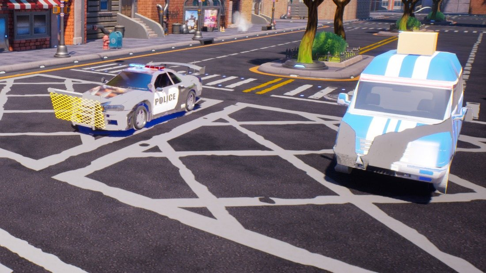
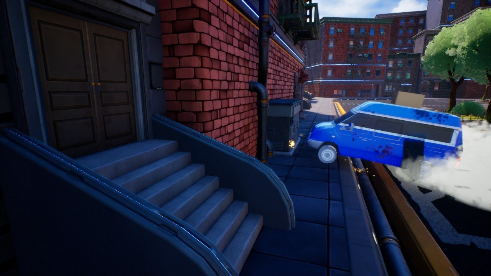

The van after a beating: dented panels, scrapes, soot and smoke from the bonnet
What it does for play. Driving is what players do every second, so it had to feel good before anything else was built. The van is slower to pick up speed but rides kerbs easily; the police car is faster and lighter. Damage turns "wreck the van" into a health bar the courier can see and feel getting worse.
How it works
Part
What happens
Handling
Physics cars with arcade help: steering assist, drift hold, downforce and self-righting keep them fun and forgiving.
Kerbs
The van rides kerbs easily; the police car is slowed by them, so the van can cut corners the police cannot.
Cameras
Third person by default. Tab cycles chase, far and bonnet views; hold C to look back; the mouse or right stick looks around.
Damage
A crash costs health by how much speed it knocks off. Cop cars hit harder than walls; small scrapes cost nothing.
What damage looks like
Dents where hits land, soot spreading over the body, bonnet smoke from grey to black, then fire. Bumpers hang off, then fall off.
Wreck
At 0 health the van catches fire and stops: a strike. A wrecked cop respawns away from the van after a few seconds.
Repairs
Repair garages around the city fix the van and its tyres for a price. They refuse a van carrying illegal cargo.
Getting unstuck
A car stuck on its side or roof rights itself; a stuck car resets a little way back for a small health cost.
Sound
Each car has its own engine with fake gears, tyre squeal, crashes by how hard the hit is, scrapes and landings.
Looks
The van looks illegal on sight: blacked-out windows, armour plates, bullet holes and a SHADY SHIPPING CO sign.
The numbers
Value
Van
Police car
Top speed
160 km/h
176 km/h
Health
100
100
Handbrake turn boost
2 times
1.7 times
Suspension stiffness
1.6 times
1 time
Chase camera distance / height
7.2 m / 2.3 m
6.5 m / 1.2 m
Radar range parked / at top speed
130 m / 200 m
110 m / 170 m
Damage value
Setting
Damage per km/h of speed lost
0.25 health
Multiplier: wall / traffic / cop car
1 / 0.8 / 1.5 times
Most health one crash can take
20
Engine smokes / catches fire
10% health lost / below 50% left
Bumper hangs off / falls off
22 / 45 health lost
Repair garage
£150
The van at 45% health: soot over the body and smoke from the bonnet, with the radar showing a route to the nearest repair garage
From the build logVehicles and driving feel
Everything in the build
Feature
What it does for play
One shared vehicle base
Van and police car share one set of code; a fix reaches both
Arcade handling
Steering, grip, drift, handbrake and brake assist that feel like an arcade racer
Live handling values
Every handling number comes from the tuning sheet and changes during play
Chase and bonnet cameras
Two views, look-back, and a field of view that widens with speed
Looking around
Mouse or stick swings the view round the car, then it swings back
Self-righting
A flipped car lands on its wheels or rolls back over by itself
Auto-reset when stuck
Only a truly stuck car is reset, after 3 s, for 5 health
Kerb riding
The van rides kerbs easily; the police car is slower on them on purpose
Nitro in two halves
One tap fires a fixed boost; two taps empty the tank
Ability feel
Camera kicks and gamepad rumble when nitro fires or fails
From the build

Both cars in the city: the van with crash dents and the police car with its bumper net

The van taking a city kerb in the kerb test, before the ball-shaped wheel traces
Wiki / Behind the design / Driving & damage
Behind the design
Why driving
Built by Abdullah · Numbers by Dafydd · In-game HUD by Ieuan · Tested by Abdullah (feel), the team (playtests)
Why we chose this
Option
For
Against
Verdict
Simulation handling
Realistic
Hard to drive in a busy city; not the toy-box tone
Rejected
Moving cars without physics
Easy to network
Rams, nets and spin-outs need believable collisions
Rejected
Physics cars with arcade assists
Believable hits; fun to drive
Needs careful tuning and network prediction
Chosen
Damage option
For
Against
Verdict
Damage per part (wheels, engine)
Deep
Hard to read at speed; big scope
Rejected
One health pool with visible stages
Easy to read; dents show where
Less depth
Chosen
Our pitch named bad driving feel as the biggest risk. The answer, also from our pitch, was to tune one car until it felt right before building the rest, and the van was that car. Abdullah tested handling, kerbs and bumps in the editor after every change.
What can go wrong
Situation
What the game does
A crash stutters the game
Dents are worked out in the background and only the dented part is redrawn
A car hangs off its wheels at the start
A car with a driver is never left asleep
A car is stuck on its roof
It rights itself, or resets for a small health cost
A huge hit
One crash can never take more than 20 health
How we know it works
Check
Target
Result so far
Driving feel
Testers rate handling as fun
Met in the uni playtests, after the steering retune
No stutter on crashes
A dent costs under 1 ms a frame
Met: was 5 to 50 ms
Kerbs
The van climbs kerbs the police car cannot
Met
Online sync
Cars meet at the same moment on every screen
Met at 50 to 73 ms of lag
From the build logVehicles and driving feel
What we set out to do
The prototype handled well but ran poorly and pushed the cars from code the network could not replay. Production had to start from a measured, fast foundation, rebuild the arcade handling so it works online, and give the courier a way to break a chase through driving skill.
The big decisions
Full comparison: Trade-off Appendix.
How the handling is built
Option
Pros
Cons
Verdict
Rebuild in C++ inside the physics step
Replays exactly when the network rewinds
Rewrites work that already existed
Chosen
Reuse the prototype Blueprint
Already tuned
Its pushes are not replayed online, so cars snap back
Rejected
One class per car
Each car free to differ
Every fix written twice
Rejected
Online, each player's machine predicts its own car and the server corrects it. A correction rewinds the car and replays its physics. Handling that runs inside the physics step is replayed with it, so every machine agrees. Abdullah rebuilt the prototype's assists this way, on one base shared by both cars. The police car then needed no new code at all: only a model, wheels and a handling row.
How a stuck car gets moving
Option
Pros
Cons
Verdict
A reset key
Always gets the player moving
A boxed-in van teleports out of a police trap
Rejected
Self-righting, then auto-reset only when truly stuck
The police team's work cannot be undone
A rare stuck car waits 3 s
Chosen
Abdullah found that "pressing R is super exploitable". Three cops could box the van in and it would simply teleport out. The reset key was removed. Most flips now fix themselves in about a second, so the chase keeps going.
How the police car handles kerbs
Option
Pros
Cons
Verdict
Same as the van
Even
No terrain advantage for the courier
Rejected
Slower and rougher on kerbs
Kerbs become an escape route for the van
The police are slowed on purpose
Chosen
This was Abdullah's call: riding kerbs should be the van's advantage. It is written into the design document so nobody "fixes" it later.
Playtesting and what changed
Date
Who played
What they found
What we changed
21 Oct
Abdullah, editor
Van and police car drive; live tuning works
Dafydd given the handling course to tune on
24 Oct
Abdullah, editor
Mouse look felt unsteady
The view now eases after the input
25 Oct
Abdullah, editor
Reset key exploitable; camera looked under the map when upside down
Reset key removed; camera lifts along the world's up
26 Oct
Abdullah's playtest
Kerbs hit like walls and cost health
Ball-shaped wheel traces, firmer van springs, no damage on low steps
26 Oct
Abdullah's playtest
Look-back slid the camera over the roof
No camera lag while looking back
30 Oct
Abdullah, uni playtest
Police car turned too slowly
Police steering sharpened (table below)
9 Nov
Online test
Van hung off its wheels at the start
A car with a driver is never left asleep
The police steering changes after the uni playtest were:
Setting
Before
After
Fastest turn rate
150
185
Turn rate at top speed
80
95
Full steering up to
20
12
Turn response
9
12
Physics wheel size
38 cm
44 cm
Problems and fixes
Problem
Cause
Fix
The editor froze for about 70 ms every 6 s
The tuning sheet was re-read on every download
Only re-read when a value really changes; worst frame now 13 ms
The police car stuttered at speed, the van did not
Smoothing between physics steps gives up when a frame takes over about 20 ms
Faster frames from the city speed-up
Kerbs kicked the car
A thin ray met the kerb edge and jumped up it in one frame
A ball the size of the tyre rolls up the kerb
A slow handbrake donut rolled the van over
No resistance to tipping
Roll resistance, like an anti-roll bar
Holding brake reversed at 93 km/h
Reverse speed was not held to the sheet value
Held to each car's value; tested at 42 km/h against 40
Two of these were found by measuring, not guessing. For the 6-second freeze, a self-drive test logged every frame. The slow frames came exactly 6.0 seconds apart, which matched the sheet download, not the car. For the police stutter, two guesses had been wrong. Abdullah then drove both cars with a per-frame recorder. One comparison showed the cause (see the chart below). A larger smoothing window fixed it fully but felt like input lag, so it was left at the default.
The foundation was measured too. The headless host was found running at 1,380 frames a second and using a whole CPU core, and was capped at 60.
Measurement (1080p, test map)
Lab tier
High tier
Frames per second
185
133
Graphics card time per frame
4.7 ms
6.8 ms
Within the 16.6 ms budget
Yes
Yes
Lessons
Record before guessing: one recording of each car answered what two guesses could not.
Driving feel is tested by the person who drives it, because automated bump runs passed while the car still felt wrong.
Settings a whole class depends on, such as physics being switched on, belong in code and not in each Blueprint.
Latest
Date
What changed
Why
8 Nov 2026
Nitro fires in two fixed halves, with a blast and a fire trail
One tap gives a fixed, predictable boost
9 Nov 2026
Nitro slot shows both halves; a failed tap says NOT READY
 Shady Shipping
Shady Shipping